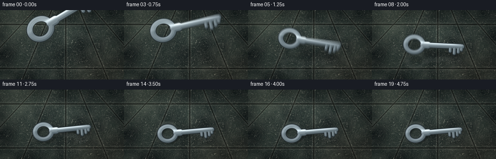
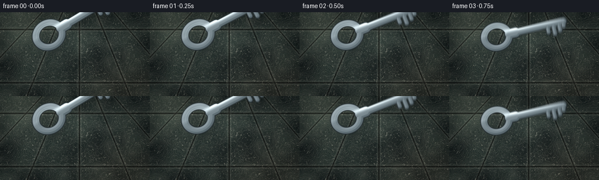

CODING AGENTS AS PIXEL WORLD MODELS
traex/DeepSeek-V4.1-Flash · material_0014
点击播放 · 原生 RGB 像素
逐轮保存的候选
回放视频、检查图与代码变化。
每份候选均可单独播放。实际图片检查记录在下方工具轨迹中。
候选 01播放与检查图
点击播放 · 原生 RGB 像素


展开代码变化
--- 上一保存版本 +++ 本次保存版本 @@ -0,0 +1,344 @@ +from __future__ import annotations + +from pathlib import Path + +import numpy as np +from PIL import Image, ImageFilter +from scipy.ndimage import gaussian_filter + +import artifact_io + + +CASE_DIR = Path(__file__).resolve().parent +WIDTH = 256 +HEIGHT = 144 +FRAMES = 20 +FPS = 4.0 +SUPERSAMPLE = 4 +H = HEIGHT * SUPERSAMPLE +W = WIDTH * SUPERSAMPLE + + +def smoothstep(edge0: float, edge1: float, value: np.ndarray) -> np.ndarray: + t = np.clip((value - edge0) / (edge1 - edge0), 0.0, 1.0) + return t * t * (3.0 - 2.0 * t) + + +def resize_rgb(array: np.ndarray, size: tuple[int, int]) -> np.ndarray: + image = Image.fromarray(np.clip(array, 0, 255).astype(np.uint8)) + return np.asarray(image.resize(size, Image.Resampling.LANCZOS), dtype=np.float32) + + +def normalize(array: np.ndarray) -> np.ndarray: + return (array - array.mean()) / max(array.std(), 1e-6) + + +def make_marble_floor() -> np.ndarray: + rng = np.random.default_rng(1407) + yy, xx = np.mgrid[0:H, 0:W].astype(np.float32) + xn = xx / (W - 1) + yn = yy / (H - 1) + + broad = normalize(gaussian_filter(rng.normal(size=(H, W)).astype(np.float32), 42.0)) + medium = normalize(gaussian_filter(rng.normal(size=(H, W)).astype(np.float32), 15.0)) + fine = normalize(gaussian_filter(rng.normal(size=(H, W)).astype(np.float32), 4.2)) + grain = normalize(gaussian_filter(rng.normal(size=(H, W)).astype(np.float32), 1.15)) + + warp = 0.78 * broad + 0.42 * medium + 0.16 * fine + phase_a = 0.029 * xx + 0.010 * yy + 3.1 * warp + phase_b = 0.018 * xx - 0.023 * yy + 2.7 * broad - 0.55 * medium + phase_c = 0.010 * xx + 0.034 * yy + 3.8 * broad + 0.3 * fine + + vein_a = np.exp(-np.square(np.sin(phase_a * 1.65 + 0.9) / 0.105)) + vein_b = np.exp(-np.square(np.sin(phase_b * 1.95 - 0.4) / 0.065)) + vein_c = np.exp(-np.square(np.sin(phase_c * 1.35 + 2.0) / 0.13)) + + base = np.empty((H, W, 3), dtype=np.float32) + base[..., 0] = 36.0 + 5.2 * broad + 2.4 * medium + base[..., 1] = 45.0 + 5.8 * broad + 2.0 * medium + base[..., 2] = 43.0 + 4.8 * broad + 1.8 * medium + + ivory = np.array([176.0, 174.0, 157.0], dtype=np.float32) + smoke = np.array([91.0, 111.0, 107.0], dtype=np.float32) + copper = np.array([119.0, 77.0, 57.0], dtype=np.float32) + base += (ivory - base) * (0.55 * vein_a[..., None] + 0.12 * vein_c[..., None]) + base += (smoke - base) * (0.20 * vein_b[..., None]) + base += (copper - base) * ( + 0.07 * vein_b[..., None] * smoothstep(0.4, 1.8, medium)[..., None] + ) + + # Long, soft studio highlights in the polished stone. + left_glow = np.exp(-((xn - 0.12) / 0.22) ** 2 - ((yn - 0.19) / 0.48) ** 2) + center_sheen = np.exp(-((xn - 0.48) / 0.33) ** 2 - ((yn - 0.30) / 0.16) ** 2) + lower_warmth = np.exp(-((xn - 0.83) / 0.28) ** 2 - ((yn - 0.92) / 0.38) ** 2) + base += left_glow[..., None] * np.array([18.0, 19.0, 16.0]) + base += center_sheen[..., None] * np.array([9.0, 11.0, 10.0]) + base += lower_warmth[..., None] * np.array([10.0, 5.0, 2.0]) + + # Perspective slab joints, kept away from the landing area. + seam_dark = np.zeros((H, W), dtype=np.float32) + seam_light = np.zeros((H, W), dtype=np.float32) + vp_x = 0.53 * W + vp_y = -0.48 * H + bottom_positions = [-0.24, 0.18, 0.53, 0.87, 1.24] + for bx in bottom_positions: + line_x = vp_x + (bx * W - vp_x) * (yy - vp_y) / (H - vp_y) + distance = np.abs(xx - line_x) + seam_dark += np.exp(-np.square(distance / (1.15 * SUPERSAMPLE))) + seam_light += np.exp(-np.square((distance - 2.2 * SUPERSAMPLE) / (1.4 * SUPERSAMPLE))) + for by in [0.205, 0.84]: + line_y = by * H + distance = np.abs(yy - line_y) + seam_dark += np.exp(-np.square(distance / (1.2 * SUPERSAMPLE))) + seam_light += np.exp(-np.square((distance - 2.4 * SUPERSAMPLE) / (1.5 * SUPERSAMPLE))) + seam_dark = np.clip(seam_dark, 0.0, 1.0) + seam_light = np.clip(seam_light, 0.0, 1.0) + base *= (1.0 - 0.62 * seam_dark[..., None]) + base += 21.0 * seam_light[..., None] * np.array([0.95, 0.92, 0.82]) + + # Fine stone tooth and a restrained vignette. + base += 1.7 * grain[..., None] + vignette = 1.0 - 0.27 * np.clip(((xn - 0.5) ** 2 / 0.25 + (yn - 0.54) ** 2 / 0.30), 0.0, 1.0) + base *= vignette[..., None] + return base + + +def capsule_sdf(u: np.ndarray, v: np.ndarray, ax: float, ay: float, bx: float, by: float, radius: float) -> np.ndarray: + pax = u - ax + pay = v - ay + bax = bx - ax + bay = by - ay + h = np.clip((pax * bax + pay * bay) / (bax * bax + bay * bay), 0.0, 1.0) + return np.hypot(pax - bax * h, pay - bay * h) - radius + + +def key_geometry(u: np.ndarray, v: np.ndarray) -> np.ndarray: + bow = np.abs(np.hypot((u + 38.0) / 1.04, v * 1.08) - 16.3) - 4.35 + collar = capsule_sdf(u, v, -20.0, 0.0, -12.0, 0.0, 6.6) + shaft = capsule_sdf(u, v, -15.0, 0.0, 51.0, 0.0, 4.65) + tooth_1 = capsule_sdf(u, v, 31.5, 0.0, 31.5, 10.0, 2.65) + tooth_2 = capsule_sdf(u, v, 39.5, 0.0, 39.5, 14.0, 2.75) + tooth_3 = capsule_sdf(u, v, 47.2, 0.0, 47.2, 11.2, 2.65) + tooth_4 = capsule_sdf(u, v, 53.0, 0.0, 53.0, 6.6, 2.7) + tip = capsule_sdf(u, v, 48.5, 0.0, 54.0, 0.0, 4.3) + return np.minimum.reduce([bow, collar, shaft, tooth_1, tooth_2, tooth_3, tooth_4, tip]) + + +def key_coverage(cx: float, cy: float, angle: float, scale: float = 1.0) -> np.ndarray: + yy, xx = np.mgrid[0:H, 0:W].astype(np.float32) + x = xx / SUPERSAMPLE + y = yy / SUPERSAMPLE + dx = (x - cx) / scale + dy = (y - cy) / scale + c = np.cos(angle) + s = np.sin(angle) + u = c * dx + s * dy + v = -s * dx + c * dy + sdf = key_geometry(u, v) * scale + return np.clip(0.5 - sdf * SUPERSAMPLE, 0.0, 1.0) + + +def render_key(cx: float, cy: float, angle: float, scale: float = 1.0) -> tuple[np.ndarray, np.ndarray]: + yy, xx = np.mgrid[0:H, 0:W].astype(np.float32) + x = xx / SUPERSAMPLE + y = yy / SUPERSAMPLE + dx = (x - cx) / scale + dy = (y - cy) / scale + c = np.cos(angle) + s = np.sin(angle) + u = c * dx + s * dy + v = -s * dx + c * dy + + sdf = key_geometry(u, v) * scale + fill = np.clip(0.5 - sdf * SUPERSAMPLE, 0.0, 1.0) + outer = np.clip(0.5 - (sdf - 1.25) * SUPERSAMPLE, 0.0, 1.0) + + distance = np.clip(-sdf, 0.0, 6.0) + height = smoothstep(0.0, 4.2, distance) + height = gaussian_filter(height, 1.0) + gy, gx = np.gradient(height) + nx = -gx * SUPERSAMPLE * 2.4 + ny = -gy * SUPERSAMPLE * 2.4 + nz = np.ones_like(nx) + norm = np.sqrt(nx * nx + ny * ny + nz * nz) + nx /= norm + ny /= norm + nz /= norm + + light = np.array([-0.58, -0.64, 0.50], dtype=np.float32) + diffuse = np.clip(nx * light[0] + ny * light[1] + nz * light[2], 0.0, 1.0) + facing = 0.43 + 0.67 * diffuse + + # A restrained brushed pattern and two elongated studio glints. + brushed = 0.032 * np.sin(v * 2.25 + 0.42 * np.sin(u * 0.15 + 0.8)) + streak_1 = np.exp(-((u + 2.0) / 37.0) ** 2 - ((v + 4.6) / 2.8) ** 2) + streak_2 = np.exp(-((u + 37.0) / 11.0) ** 2 - ((v + 8.0) / 5.3) ** 2) + streak_3 = np.exp(-((u - 36.0) / 15.0) ** 2 - ((v + 3.2) / 1.7) ** 2) + specular = 0.72 * streak_1 + 0.55 * streak_2 + 0.27 * streak_3 + + steel = np.array([135.0, 149.0, 157.0], dtype=np.float32) + cool_shadow = np.array([58.0, 73.0, 80.0], dtype=np.float32) + vertical_tone = np.clip(0.55 - v / 36.0, 0.0, 1.0) + top_rgb = cool_shadow + (steel - cool_shadow) * facing[..., None] + top_rgb += vertical_tone[..., None] * np.array([9.0, 10.0, 10.0]) + top_rgb += (brushed * 30.0)[..., None] * np.array([0.90, 1.0, 1.02]) + top_rgb += (specular * 176.0)[..., None] * np.array([0.98, 1.0, 1.0]) + + # Dark beveled side plus a crisp highlight on the upper-left rim. + rim = smoothstep(0.0, 1.35, distance) + top_rgb *= (0.63 + 0.37 * rim)[..., None] + rim_light = np.clip(nx * -0.62 + ny * -0.78, 0.0, 1.0) * (1.0 - rim) + top_rgb += rim_light[..., None] * np.array([90.0, 96.0, 97.0]) + side_rgb = np.array([31.0, 40.0, 44.0], dtype=np.float32) + 7.0 * facing[..., None] + + rgb = side_rgb * (1.0 - fill[..., None]) + top_rgb * fill[..., None] + return np.clip(rgb, 0.0, 255.0), outer + + +def trajectory(t: float) -> tuple[float, float, float]: + ground_y = 87.5 + impact_1 = 1.50 + impact_2 = 2.30 + impact_3 = 3.20 + + if t < impact_1: + p = np.clip(t / impact_1, 0.0, 1.0) + height = 145.0 * (1.0 - p * p) + angle = np.deg2rad(-31.0 + 52.0 * p ** 1.55) + elif t < impact_2: + p = (t - impact_1) / (impact_2 - impact_1) + height = 30.0 * 4.0 * p * (1.0 - p) + angle = np.deg2rad(21.0 - 27.0 * smoothstep(0.0, 1.0, np.array(p))) + elif t < impact_3: + p = (t - impact_2) / (impact_3 - impact_2) + height = 8.5 * 4.0 * p * (1.0 - p) + angle = np.deg2rad(-6.0 + 3.0 * np.sin(p * np.pi * 2.0)) + else: + settle = t - impact_3 + height = 0.45 * np.exp(-settle * 7.0) * np.sin(settle * 34.0) + angle = np.deg2rad(-5.0 + 1.2 * np.exp(-settle * 4.0) * np.sin(settle * 18.0)) + + screen_y = ground_y - 0.52 * height + return screen_y, float(angle), float(height) + + +def dust_field(t: float) -> np.ndarray: + field = np.zeros((H, W), dtype=np.float32) + yy, xx = np.mgrid[0:H, 0:W].astype(np.float32) + x = xx / SUPERSAMPLE + y = yy / SUPERSAMPLE + for impact_t, strength, seed in [(1.50, 1.0, 71), (2.30, 0.42, 173), (3.20, 0.16, 281)]: + age = t - impact_t + if 0.0 <= age <= 0.9: + rng = np.random.default_rng(seed) + fade = np.exp(-age * 3.5) * strength + for _ in range(18): + side = -1.0 if rng.random() < 0.5 else 1.0 + start_x = 128.0 + side * rng.uniform(43.0, 58.0) + start_y = 87.5 + rng.uniform(-2.5, 3.5) + vx = side * rng.uniform(8.0, 24.0) + vy = rng.uniform(-8.0, 10.0) + px = start_x + vx * age + py = start_y + vy * age + 9.0 * age * age + radius = rng.uniform(0.45, 1.2) + amp = rng.uniform(0.16, 0.46) * fade + field += amp * np.exp(-((x - px) ** 2 + (y - py) ** 2) / (radius * radius)) + return field + + +def impact_ring(t: float) -> np.ndarray: + yy, xx = np.mgrid[0:H, 0:W].astype(np.float32) + x = xx / SUPERSAMPLE + y = yy / SUPERSAMPLE + ring = np.zeros((H, W), dtype=np.float32) + for impact_t, strength in [(1.50, 1.0), (2.30, 0.45)]: + age = t - impact_t + if 0.0 <= age <= 0.48: + radius = 15.0 + 86.0 * age + rx = radius + ry = radius * 0.54 + radial = np.sqrt(((x - 128.0) / rx) ** 2 + ((y - 88.0) / ry) ** 2) + envelope = np.exp(-age * 5.0) * strength + ring += envelope * np.exp(-((radial - 1.0) / 0.055) ** 2) + return ring + + +def render_frame(floor: np.ndarray, t: float) -> np.ndarray: + image = floor.copy() + center_x = 128.0 + center_y, angle, height = trajectory(t) + + ring = impact_ring(t) + image += ring[..., None] * np.array([34.0, 36.0, 32.0]) + + dust = dust_field(t) + image += dust[..., None] * np.array([165.0, 159.0, 143.0]) + + # The diffuse contact shadow stays on the floor while the key is airborne. + shadow_mask = key_coverage(center_x + 3.2 + 0.035 * height, 88.0 + 2.0, angle, 1.0) + shadow_sigma = 2.0 + 0.055 * height + shadow_mask = gaussian_filter(shadow_mask, shadow_sigma * SUPERSAMPLE) + shadow_alpha = 0.05 + 0.27 * np.exp(-height / 34.0) + image *= (1.0 - shadow_alpha * shadow_mask[..., None]) + + # A faint vertically mirrored image makes the polished marble read as a surface. + reflection_y = 2.0 * 88.0 - center_y + reflection_alpha = 0.055 + 0.12 * np.exp(-height / 30.0) + if reflection_y < HEIGHT + 35.0: + reflection_mask = key_coverage(center_x, reflection_y, -angle, 1.0) + reflection_mask = gaussian_filter(reflection_mask, (1.1 + 0.018 * height) * SUPERSAMPLE) + reflection_tint = np.array([119.0, 128.0, 123.0], dtype=np.float32) + image = image * (1.0 - reflection_alpha * reflection_mask[..., None]) + image += reflection_alpha * reflection_mask[..., None] * reflection_tint + + # Four short-exposure samples keep the fast fall and tumble crisp but not stroboscopic. + shutter = 0.055 + acc_rgb = np.zeros_like(image) + acc_alpha = np.zeros((H, W), dtype=np.float32) + for sample in range(4): + offset = (-0.5 + sample / 3.0) * shutter + sy, sa, sh = trajectory(t + offset) + rgb, alpha = render_key(center_x, sy, sa, 1.0 + 0.0025 * sh) + acc_rgb += rgb * alpha[..., None] + acc_alpha += alpha + acc_alpha /= 4.0 + acc_rgb /= 4.0 + safe_alpha = np.maximum(acc_alpha, 1e-5) + key_rgb = acc_rgb / safe_alpha[..., None] + image = image * (1.0 - acc_alpha[..., None]) + key_rgb * acc_alpha[..., None] + + # Tiny floor-contact sparkle at the two strongest impacts. + for impact_t, strength in [(1.50, 1.0), (2.30, 0.45)]: + age = t - impact_t + if 0.0 <= age <= 0.18: + yy, xx = np.mgrid[0:H, 0:W].astype(np.float32) + x = xx / SUPERSAMPLE + y = yy / SUPERSAMPLE + flash = np.exp(-((x - 181.0) ** 2 + (y - 88.0) ** 2) / 7.0) + flash += np.exp(-((x - 73.0) ** 2 + (y - 88.0) ** 2) / 10.0) + image += flash[..., None] * (strength * 82.0 * np.exp(-age * 18.0)) + + # Gentle highlight drift and final grade. + yy, xx = np.mgrid[0:H, 0:W].astype(np.float32) + xn = xx / (W - 1) + yn = yy / (H - 1) + upper_light = np.exp(-((xn - 0.18) / 0.38) ** 2 - ((yn - 0.06) / 0.24) ** 2) + image += upper_light[..., None] * np.array([6.0, 6.0, 4.5]) + image = np.clip(image, 0.0, 255.0) + image = image * 0.975 + np.array([3.0, 3.5, 3.0], dtype=np.float32) + + small = resize_rgb(image, (WIDTH, HEIGHT)) + # A touch of sensor grain prevents large tonal fields from banding. + rng = np.random.default_rng(9000 + int(round(t * FPS))) + small += rng.normal(0.0, 0.55, size=small.shape) + return np.clip(small, 0, 255).astype(np.uint8) + + +def main() -> None: + floor = make_marble_floor() + frames = np.stack([render_frame(floor, frame / FPS) for frame in range(FRAMES)]) + artifact_io.save(frames, CASE_DIR) + + +if __name__ == "__main__": + main()
可观测工具轨迹
实际执行的命令与返回图片。
命令 1exit 0
/bin/bash -c "pwd && rg --files -g 'prompt.txt' -g 'GENERATION_RULES.md' -g 'task_spec.json' -g '"'!node_modules'"'"
命令 2exit 0
/bin/bash -c 'ls -la'
命令 3exit 0
/bin/bash -c 'which ffmpeg || true; which python3 || true; python3 --version 2>/dev/null || true; ffmpeg -version 2>/dev/null | head -n 3 || true'
命令 4exit 0
/bin/bash -c 'cat prompt.txt'
命令 5exit 0
/bin/bash -c 'cat GENERATION_RULES.md'
命令 6exit 0
/bin/bash -c 'cat task_spec.json'
命令 7exit 0
/bin/bash -c "sed -n '1,240p' artifact_io.py && sed -n '1,260p' player_template.html"
命令 8exit 0
/bin/bash -c "python3 - <<'PY' import importlib.util for m in ['numpy','PIL','scipy','cv2','imageio']: print(m, bool(importlib.util.find_spec(m))) PY"
命令 9exit 1
/bin/bash -c 'python3 generate.py'
命令 10exit 0
/bin/bash -c 'python3 generate.py'
命令 11exit 0
/bin/bash -c 'ls -lh inspection.png transition_check.png pixels.npz index.html frames/00.png frames/19.png'
命令 12exit 0
/bin/bash -c "python3 - <<'PY'
from PIL import Image
im=Image.open('inspection.png')
im.resize((1024,682),Image.Resampling.NEAREST).save('.tmp/inspection_large.png')
PY"命令 13exit 0
/bin/bash -c 'which chafa || true; which viu || true; which img2txt || true; which jp2 || true'
命令 14exit 0
/bin/bash -c "python3 - <<'PY'
from PIL import Image
import numpy as np
for i in [0,3,6,9,12,15,19]:
im=np.asarray(Image.open(f'frames/{i:02d}.png')).astype(float)
print(i, 'mean', im.mean((0,1)).round(1), 'contrast', im.std().round(1), 'range', (im.min(), im.max()))
PY"命令 15exit 0
/bin/bash -c "python3 - <<'PY'
from PIL import Image
im=Image.open('inspection.png')
# Crop first and last rendered frames from contact sheet, upscale with nearest.
for idx, src in enumerate([(0,21),(3*256,21),(0,165),(3*256,165)]):
x,y=src
im.crop((x,y,x+256,y+144)).resize((768,432),Image.Resampling.NEAREST).save(f'.tmp/detail_{idx}.png')
PY"命令 16exit 0
/bin/bash -c "python3 - <<'PY'
from PIL import Image, ImageOps
import numpy as np
chars=' .,:;irsXA253hMHGS#9B&@'
for f in [0,2,5,6,8,12,19]:
a=np.asarray(Image.open(f'frames/{f:02d}.png').convert('L').resize((64,36),Image.Resampling.BOX))
lo,hi=np.percentile(a,[3,97]); a=np.clip((a-lo)/(hi-lo),0,1)
print('\\nFRAME',f)
for row in a:
print(''.join(chars[min(len(chars)-1,int(v*(len(chars)-1)))] for v in row))
PY"命令 17exit 0
/bin/bash -c "python3 - <<'PY'
import json, numpy as np
from pathlib import Path
from PIL import Image
root=Path('.')
spec=json.loads((root/'task_spec.json').read_text())
with np.load(root/'pixels.npz') as z:
p=z['pixels']
print('pixels',p.shape,p.dtype,'expected',(spec['height'],spec['width'],spec['frames']))
print('range',int(p.min()),int(p.max()))
frames=[np.asarray(Image.open(root/'frames'/f'{i:02d}.png')) for i in range(spec['frames'])]
print('frame files',len(frames),frames[0].shape,frames[0].dtype)
packed=(frames[0][:,:,0].astype(np.uint32)<<16)|(frames[0][:,:,1].astype(np.uint32)<<8)|frames[0][:,:,2]
print('npz matches frame 0',np.array_equal(packed,p[:,:,0]))
diffs=[np.abs(frames[i].astype(float)-frames[i-1].astype(float)).mean() for i in range(1,len(frames))]
print('consecutive mean abs diff', [round(v,2) for v in diffs])
print('all unique',len({f.tobytes() for f in frames})==len(frames))
html=(root/'index.html').read_text()
print('player ready', 'window.__pixelReady=true' in html, 'html bytes',len(html))
PY"保存候选 1 份；完成命令 17 次；可验证图片返回 0 张。原始 API 响应与完整日志保留在本地。